Link naar pagina: https://steunpuntcultureelerfgoednh.nl/agenda/ Geen nieuwe bevindingen.
Samenvatting
Wij hebben de website steunpuntcultureelerfgoednh.nl onderzocht tussen 11 en 13 september 2025. Op dit moment zijn 26 van de 55 succescriteria als voldoende beoordeeld. In dit rapport lees je wat er bij de overige 29 nog fout gaat, en hoe je dat kunt verbeteren.
In opdracht van

-
Voldoet
-
Afgekeurd
55
Totaal
- voldoet
Impact
Klein: 0
Medium: 0
Groot: 0
Type
Content: 0
Techniek: 0
Waarneembaar
- van 20
Bedienbaar
- van 20
Begrijpelijk
- van 13
Robuust
- van 2
Deze SC zijn afgekeurd:
Over dit onderzoek
- Onderzocht door
- Proper Access
- Opdrachtgever
- provincie Noord-Holland
- Leverancier techniek
- onbekend
- Datum rapport
- 13 september 2025
- Standaard
- WCAG 2.2
- Methodologie
- WCAG-EM
Scope van het onderzoek
- Alle pagina's op de website steunpuntcultureelerfgoednh.nl
- Alle PDF's op de website steunpuntcultureelerfgoednh.nl
Buiten scope:
- Subwebsite(s) waarbij de HTML en/of het systeem afwijkt van de onderzochte website
- De van derden afkomstige inhoud (wettelijke uitzondering voor de overheid)
Basisniveau toegankelijkheidsondersteuning
- Mozilla Firefox, versie 139
- Google Chrome, versie 139
- Apple Safari, versie 18
- PAC software to test PDF
- NVDA schermlezer in combinatie met Firefox
- VoiceOver schermlezer in combinatie met Safari
- Andere gangbare browsers en hulpapparatuur
Technologieën van de website
- HTML
- CSS
- JavaScript
- WAI-ARIA
- SVG
Voortgang opgeloste bevindingen
Samenwerken met je team
Exporteer alle bevindingen als CSV-bestand. Je kunt het in een (online) spreadsheet inladen om met je team samen te werken.
Importeer in Jira
Exporteer alle bevindingen als Jira-compatibel CSV-bestand. Je kunt het direct importeren via Jira > Issues > Import issues from CSV.
Zelf bijhouden in de browser
Houd per bevinding bij of het is opgelost. Je voortgang wordt opgeslagen in jouw browser. Niemand anders kan je resultaat zien.
0 van
0 opgelost
Gevonden problemen
Filter bevindingen op:
Impact:
Type:
Status:
Geen bevindingen gevonden voor dit filter.
#1 - Kleurcontrast van tekst is te laag (tekst kleiner dan 24px en niet vetgedrukt)
Op de website wordt de groene kleur (#3EA8AE) gebruikt. In combinatie met verschillende andere kleuren is de contrastratio te laag. De contrastratio ten opzichte van wit is bijvoorbeeld 2,8:1.
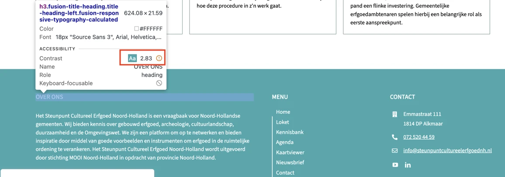
Op de website zijn er links met iconen waarbij het kleurcontrast tussen het icoon en de achtergrond te laag is. Zie de volgende voorbeelden. Het groene envelopicoon, het vergrootglasicoon en het icoon met drie horizontale lijnen in de header hebben op de lichtgroene achtergrond (#DEEFEE) een contrastratio van 2,4:1. In de footer hebben de iconen voor Youtube en Linkedin een contrastratio van 2,8:1 tussen de groene kleur en de witte achtergrond. In het venster “Customise Consent Preferences”, dat wordt geopend via de knop “Customise” in de cookiebanner, hebben de schakelknoppen in de “aan”-toestand een witte schakelcirkel op een groene achtergrond.
Het icoon is dus niet voor iedereen zichtbaar.
Oplossing:
Zorg voor een minimaal contrast van 3,0:1.
#2 - Focus niet meer zichtbaar omdat cookiebanner bij inzoomen deel van pagina bedekt
Wanneer tot 400% wordt ingezoomd op een scherm met een resolutie van 1280 bij 1024 pixels, komt de toetsenbordfocus op elementen die onder de cookiebanner verborgen zijn. Daardoor is niet te zien waar de focus zich bevindt.
Oplossing:
Zorg ervoor dat de cookiebanner meeschaalt bij inzoomen, zodat de focus zichtbaar is.
#3 - Taalwisseling ontbreekt op anderstalige content
De cookiebanner bevat aria-label-attributen met tekst in het Engels. In de cookiebanner staan ook zinnen in een andere taal zonder taalcode. Dezelfde problemen komen voor in het venster “Customise Consent Preferences”. Hetzelfde probleem is te zien bij de knop met het icoon voor cookievoorkeuren, die de toegankelijke naam “Consent Preferences” heeft.
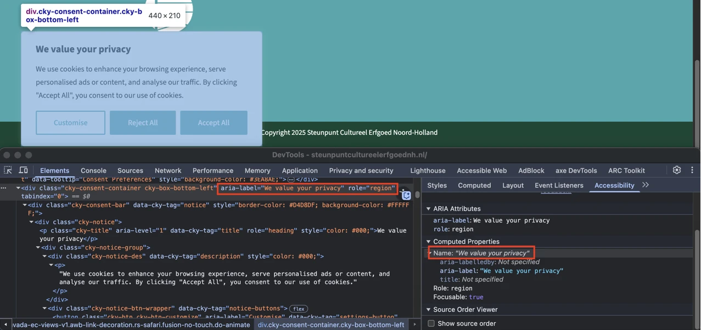
Op de cookiebanner is de tekst "We value your privacy" niet als kop gemarkeerd. Bezoekers die hulpsoftware gebruiken hebben niets aan een (tussen)kop die er wel uitziet als kop, maar niet als kop is gemarkeerd. Via de koppen op een pagina kunnen gebruikers van hulpsoftware de inhoud scannen of snel naar een bepaalde sectie springen. Maar dat kan alleen als de kop ook echt in de code staat. Als koppen alleen visueel als kop zijn vormgegeven (bijvoorbeeld vetgedrukt), ontstaat bovendien nog een ander probleem: de structuur van de informatie in de code wijkt dan af van de visuele structuur. Op deze pagina staat een instructie hoe je zelf koppen op een webpagina kan testen: https://properaccess.nl/zo-controleer-je-de-koppenstructuur-van-je-website/.
Oplossing:
Dit voorkom je door koppen altijd te markeren met het juiste HTML-element, op het juiste kopniveau: h1, h2, h3, h4, h5 of h6. Meestal kun je het kopniveau kiezen via de content-editor in je CMS. De HTML-code voor de kop wordt dan automatisch toegepast.
#4 - Knop heeft geen code die aangeeft dat er een popup opent
In de cookiebanner opent de knop met het label "Customise" een dialoogvenster, maar deze functionaliteit is niet aangegeven in de code.
Oplossing:
- Voeg het attribuut
aria-haspopup="dialog"toe aan de knop. Hierdoor weet hulpsoftware dat je met de knop een dialoogvenster opent. - Met het
aria-expanded-attribuut kun je de toestand van het dialoogvenster (open of gesloten) aangeven ("true" of "false”). Let op: dit attribuut werkt alleen als beide acties (openen en sluiten) door dezelfde knop worden uitgevoerd.
#5 - Kopjes zijn niet als koptekst gemarkeerd
In het venster “Customise Consent Preferences” staan meerdere uitklapbare knoppen met de teksten “Necessary”, “Functional”, “Analytics” en andere. De relatie tussen deze teksten en de bijbehorende inhoud is niet gedefinieerd in de HTML.
Oplossing:
Plaats deze teksten binnen een kop-element. Dan kan hulpsoftware de tekst van de knop als koptekst herkennen. De juiste volgorde van elementen hier is: een kop-element (bijvoorbeeld h2) en daarbinnen een button-element.
#6 - Contrast van icoon op knop is te laag
Op de cookiebanner hebben de schakelknoppen naast “Necessary”, “Functional”, “Analytics” en andere onvoldoende kleurcontrast wanneer ze in de “uit”-toestand staan. De grijze schakelcirkel (#D0D5D2) op een witte achtergrond heeft een contrastratio van slechts 1,5:1, wat onder de vereiste minimumwaarde ligt.
Het icoon is dus niet voor iedereen zichtbaar.
Oplossing:
Zorg voor een minimaal contrast van 3,0:1.
#7 - De naam van de link beschrijft de bestemming niet.
In de header staat een link met een vergrootglasicoon met de toegankelijke naam “Link to #awb-open-oc__5580”, afkomstig van het aria-label. Deze toegankelijke naam beschrijft de bestemming van de link niet goed. Hetzelfde probleem doet zich voor bij andere links in de header. De link met het icoon met drie horizontale lijnen heeft de toegankelijke naam “Link to #awb-open-oc__1979”. De link met het logo heeft de toegankelijke naam “logo-scenh-vignet”. De link met het “x”-icoon in het geopende navigatiemenu heeft de toegankelijke naam “Link to #awb-close-oc__1979”. De link met een envelopicoon heeft de toegankelijke naam “Link to /contact”, waarbij het teken “/” overbodig is.
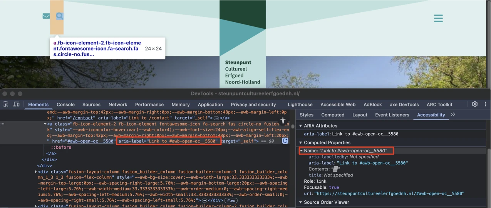
Bovenaan de pagina staat het logo dat ook een link is en de tekst toont: “Steunpunt Cultureel Erfgoed Noord-Holland”. De toegankelijke naam van deze link is “logo-scenh-vignet”. In de footer staat een link met een logo dat de tekst toont: “MOOI Noord-Holland Adviseurs Omgevingskwaliteit.”. De toegankelijke naam is “logo-mnh-white”. Zoals je ziet is de toegankelijke naam van de link niet hetzelfde als de zichtbare tekst in het logo. Daardoor werkt de link niet goed als je hem met je stem wilt activeren. Je noemt dan namelijk de tekst die je in het logo ziet. Als de toegankelijke naam anders is, zal het systeem de link dus niet herkennen.
Oplossing:
Zorg dat de tekst die in het logo zichtbaar is voorkomt in de toegankelijke naam, het liefst vooraan. Het is nog beter als de toegankelijke naam gelijk is aan de zichtbare tekst.
#8 - Toetsenbordfocus komt niet op een logische plek nadat menu is gesloten
In de header opent de link met het icoon met drie horizontale lijnen het navigatiemenu. Na het sluiten van het menu keert de toetsenbordfocus niet terug naar het element dat dit heeft geopend of naar het volgende logische element in de focusvolgorde van de pagina. Ditzelfde probleem doet zich voor wanneer het dialoogvenster met het zoekveld wordt gesloten. Dit venster kan worden geopend via het vergrootglasicoon in de header.
Oplossing:
Zorg dat de focus na het sluiten van het venster terechtkomt op het element waarmee het dialoogvenster werd geopend.
#9 - Invoerveld is niet met het toetsenbord te bedienen
In de header opent de link met het icoon met drie horizontale lijnen het navigatiemenu. In dit menu staat een zoekveld dat niet toegankelijk is met het toetsenbord. Ditzelfde probleem doet zich voor bij de knop met het vergrootglasicoon.
Oplossing:
Zorg dat alle invoervelden met het toetsenbord kunnen worden bediend.
#10 - Link heeft geen code die aangeeft dat er een popup opent
In de header opent de link met het vergrootglasicoon een dialoogvenster, maar deze functionaliteit is niet aangegeven in de code.
Oplossing:
- Voeg het attribuut
aria-haspopup="dialog"toe aan de link. Hierdoor weet hulpsoftware dat je met de link een dialoogvenster opent. - Met het
aria-expanded-attribuut kun je de toestand van het dialoogvenster (open of gesloten) aangeven ("true" of "false”). Let op: dit attribuut werkt alleen als beide acties (openen en sluiten) door dezelfde link worden uitgevoerd.
#11 - Dialoogvenster heeft niet de juiste rol en geen toegankelijke naam
In de header opent de link met een vergrootglasicoon een dialoogvenster met een zoekveld. Dit dialoogvenster heeft geen juiste ARIA-rol en geen toegankelijke naam. Schermlezers kunnen hierdoor niet doorgeven dat het om een dialoogvenster gaat, en wat de inhoud ervan is.
Oplossing:
Voeg twee attributen toe aan het dialoogvenster: een aria-label met een duidelijke beschrijving van de inhoud (aria-label="Beschrijving van de inhoud") en role="dialog".
#12 - Toetsenbordfocus is niet zichtbaar
In de header opent de link met een vergrootglasicoon een dialoogvenster. In dit dialoogvenster is de toetsenbordfocus niet zichtbaar op de knop met het vergrootglasicoon. De toetsenbordfocus moet altijd zichtbaar zijn op interactieve elementen zoals links, knoppen en invoervelden die met het toetsenbord focus kunnen krijgen. Bezoekers die met het toetsenbord navigeren moeten goed kunnen zien op welke plek van de pagina ze zijn. Anders weten ze niet op welk moment ze op Enter moeten drukken om een knop of link te bedienen.
Oplossing:
Zorg dat de toetsenbordfocus zichtbaar is op de genoemde elementen.
#13 - Voor de validatie is alleen HTML5-validatie gebruikt
In de header opent de link met een vergrootglasicoon een dialoogvenster. In dit dialoogvenster staat een zoekveld dat gebruikmaakt van HTML5-validatie. Ditzelfde probleem doet zich voor bij het zoekveld in het navigatiemenu dat wordt geopend via de link met drie horizontale lijnen.
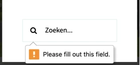
In de header staat een groep links die visueel als groep worden weergegeven, maar deze groepering is niet terug te zien in de HTML-structuur. Het gaat om de links met de iconen: envelop en vergrootglas. Ditzelfde probleem doet zich voor in de footer bij de links “Privacy”, “Toegankelijkheidsverklaring”, “Design Funcke” en “Weer een website door NHWS”. Als het voor een ziende bezoeker duidelijk is dat een groep links bij elkaar hoort, dan moet die structuur ook in de HTML-code aanwezig zijn.
Oplossing:
Neem de elementen op in een ul- of nav-element.
#14 - Toetsenbordfocus is niet zichtbaar
Op de pagina's is de toetsenbordfocus niet zichtbaar op de link met een pijl die de pagina naar boven scrollt. De toetsenbordfocus moet altijd zichtbaar zijn op interactieve elementen zoals links, knoppen en invoervelden die met het toetsenbord focus kunnen krijgen. Bezoekers die met het toetsenbord navigeren moeten goed kunnen zien op welke plek van de pagina ze zijn. Anders weten ze niet op welk moment ze op Enter moeten drukken om een knop of link te bedienen.
Oplossing:
Zorg dat de toetsenbordfocus zichtbaar is op de genoemde elementen.
#15 - Onzichtbaar element krijgt toetsenbordfocus
In de footer komt de toetsenbordfocus op een onzichtbaar interactief element terecht na de link “Weer een website door NHWS”. Dit onzichtbare element is de link met de toegankelijke naam “Toggle Sliding Bar Area”. De toetsenbordfocus mag niet terechtkomen op onzichtbare interactieve elementen (links, knoppen, formuliervelden). Als dat wel gebeurt, kan een bezoeker ze onbedoeld activeren.
Oplossing:
Zorg dat alleen elementen die zichtbaar zijn toetsenbordfocus kunnen krijgen en dat de focusvolgorde logisch is.
#16 - Bezoekers die inzoomen tot 400% kunnen niet meer alle tekst lezen
Wanneer deze pagina wordt bekeken met een schermresolutie van 1280 bij 1024 pixels en wordt ingezoomd tot 400%, valt de volgende linktekst gedeeltelijk weg: "info@steunpuntcultureelerfgoednh.nl".
Oplossing:
Zorg dat alles nog werkt en leesbaar is als je inzoomt tot 400% op een scherm van 1280 bij 1024 pixels.
#17 - De toetsenbordfocus is niet voor alle bezoekers zichtbaar.
Het volgende is alleen een advies, maar het kan de toegankelijkheid van de website vergroten.
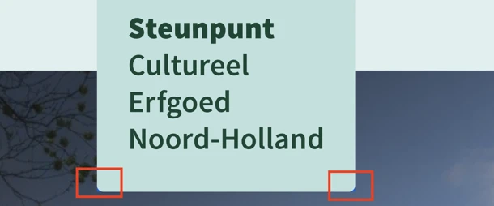
Op de website zijn er pagina's met kruimelpadnavigatie die is opgebouwd als een verzameling links, maar de onderliggende structuur en de relatie tussen deze links zijn in de HTML niet semantisch gedefinieerd.
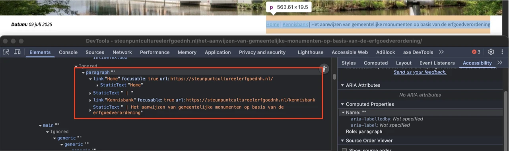
De artikelen die links zijn, hebben geen toegankelijke namen. Hierdoor begrijpen bezoekers die een schermlezer gebruiken niet wat de bestemming of de functie is van de link.
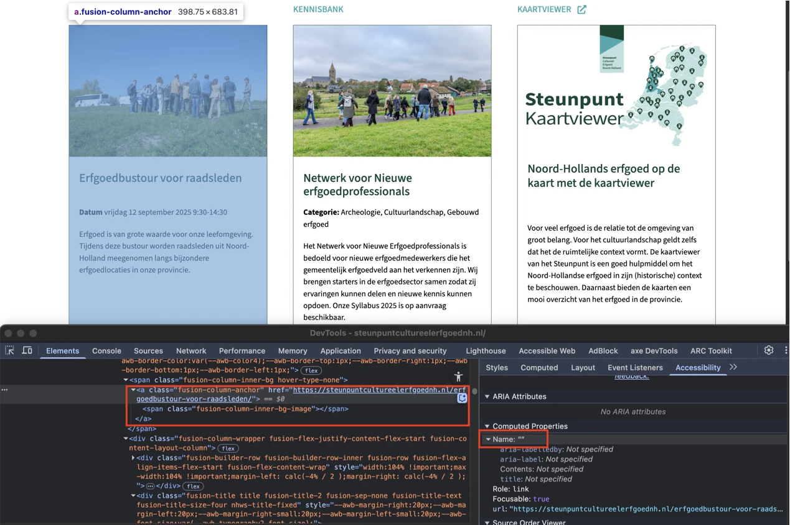
De volgorde van HTML-elementen binnen artikelen die ook links zijn, is niet logisch. De afbeeldingen staan boven de koppen. De huidige volgorde is afbeelding, kop, tekst. Als je deze artikelen van boven naar beneden laat voorlezen door een schermlezer, is niet duidelijk welke inhoud (afbeelding en/of tekst) bij welke kop hoort. Dat komt doordat de koppen niet bovenaan staan in de code van elk artikel. Dat kan verwarrend zijn voor bezoekers die een schermlezer gebruiken.
Oplossing:
Je lost dit op door alle inhoud die bij een bepaalde kop hoort, in de code onder die kop te plaatsen. Dit zorgt voor een logische structuur. De visuele vormgeving mag wel afwijken.
#18 - Alternatieve tekst van informatieve afbeelding is niet betekenisvol
De artikelen die links zijn bevatten afbeeldingen. De alternatieve teksten van deze afbeeldingen, afkomstig uit de title-attributen, beschrijven de afbeeldingen onvoldoende. Op de homepagina https://steunpuntcultureelerfgoednh.nl/ is bijvoorbeeld de alternatieve tekst van de afbeelding in het artikel “Gered van de sloop: de renovatie van de Rode Buurt in Zaandijk” “kleinZaandijkDJI_0366”. Afbeeldingen die informatie overdragen moeten een betekenisvolle alternatieve tekst hebben, waarin de belangrijke informatie uit de afbeelding wordt beschreven.
Oplossing:
Voeg een beschrijvende alternatieve tekst toe aan het alt-attribuut. Om herhaling te voorkomen mag deze alternatieve tekst niet gelijk zijn aan tekst die al op de pagina staat, bijvoorbeeld als onderschrift van de afbeelding.
strong-element is gebruikt voor opmaak
De artikelen die links zijn bevatten teksten zoals “Datum” en “Categorie”. Het strong-element wordt onjuist gebruikt voor opmaakdoeleinden bij deze teksten. Deze teksten zijn waarschijnlijk vet gemaakt door ze in een strong-element te plaatsen.
Het strong-element heeft een semantische waarde: het geeft een bepaalde betekenis aan de tekst die erin staat. Dit element geeft aan dat de tekst extra nadruk moet krijgen. Om die reden mag dit element niet gebruikt worden om alleen een visueel effect te bereiken (vetgedrukte tekst).
Oplossing:
Verwijder de onnodige strong-elementen en gebruik CSS om de tekst vet te maken.
#19 - Informatie is niet meer leesbaar als tekstafstand wordt aangepast
Wanneer bezoekers tekstafstand toepassen zoals beschreven in dit succescriterium, worden in de artikelen die links zijn de teksten in de kop visueel aan de onderkant afgesneden. Zie bijvoorbeeld op de homepagina https://steunpuntcultureelerfgoednh.nl/ de tekst “Erfgoedbustour voor raadsleden”.
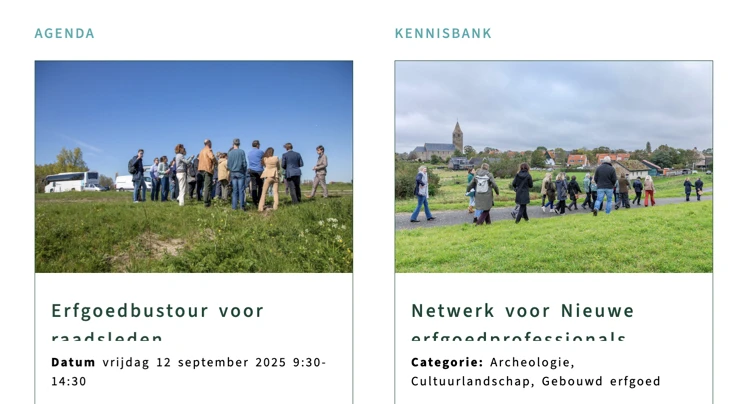
Er is geen alternatief voor de afbeeldingen in de hCaptcha. Daarnaast biedt de website momenteel geen toegankelijke vervanging voor de hCaptcha als geheel. Om die reden moet de captcha zelf volledig toegankelijk zijn. Dat is op dit moment niet zo. De tekst ‘klik op elke afbeelding met…’ maakt het doel van de afbeeldingen wel duidelijk, maar dat is niet genoeg.
Oplossing:
Ons advies is om helemaal geen CAPTCHA te gebruiken, omdat het altijd een drempel vormt. Bekijk de Engelstalige pagina Inaccessibility of CAPTCHA voor meer informatie en eventuele alternatieven.
#20 - Bezoekers die inzoomen tot 400% kunnen niet meer alle tekst lezen
Wanneer de pagina’s worden bekeken met een schermresolutie van 1280 bij 1024 pixels en er tot 400% wordt ingezoomd, is de linktekst “Voorwaarden” op de hCaptcha niet meer volledig zichtbaar.
Oplossing:
Zorg dat alles nog werkt en leesbaar is als je inzoomt tot 400% op een scherm van 1280 bij 1024 pixels.
#21 - De tekst van de knop komt niet voor in de toegankelijke naam.
Na het aanklikken van het selectievakje in de hCaptcha kan er een challenge verschijnen met de tekst “Tik op dingen die verticaal gestapeld kunnen worden.”. In dit dialoogvenster staat een knop met de zichtbare tekst “Overslan”. De toegankelijke naam van deze knop is “Sla uitdaging over”, afkomstig van het aria-label. De zichtbare tekst moet deel uitmaken van de toegankelijke naam van de knop, maar dat is nu niet het geval.
Oplossing:
Zorg dat de zichtbare tekst voorkomt in de toegankelijke naam.
#22 - Er is een tijdslimiet ingesteld voor de captcha
Wanneer het selectievakje in het hCaptcha-element wordt geactiveerd, verschijnt er een dialoogvenster met een challenge. Als er daarna enige tijd geen actie wordt ondernomen, moet de test opnieuw worden gedaan. Dat betekent dat er een tijdslimiet is ingesteld voor hCaptcha. Dit kan een probleem zijn voor iemand die veel tijd nodig heeft om de rest van het formulier in te vullen. Deze limiet is geen onderdeel van de captcha zelf, want de tijd gaat pas lopen nadat de captcha is voltooid. Daarom moet de tijdslimiet aan de toegankelijkheidseisen voldoen.
Oplossing:
Zorg dat bezoekers de tijdslimiet uit kunnen uitzetten, aanpassen of verlengen.
#23 - Menu heeft geen juiste rol.
Wanneer het selectievakje in het hCaptcha-element wordt aangeklikt, verschijnt er een dialoogvenster met een challenge. In dit venster staat een knop met drie stippen die een menu opent. Dit menu heeft geen juiste ARIA-rol.
Oplossing:
Zorg dat het menu een juiste rol heeft.
#24 - De geselecteerde toestand van het menu-item wordt onjuist aangegeven.
Wanneer het selectievakje in het hCaptcha-element wordt geactiveerd, verschijnt er een dialoogvenster met een challenge. In dit venster staat een knop met drie stippen die een menu opent. In dit menu staat een menu-item, zoals “Afbeelding rapporteren”, dat visueel als geselecteerd wordt weergegeven. In de code is dit echter gemarkeerd met aria-selected="false".
Oplossing:
Als het menu-item visueel is geselecteerd, stel aria-selected="true" in. Als het niet is geselecteerd, stel aria-selected="false" in.
Link naar pagina: https://steunpuntcultureelerfgoednh.nl/beeldverslag-expeditie-schatrijk-in-de-gooi-en-vechtstreek/
strong- of em-element is gebruikt voor opmaak
Op deze pagina worden de strong- en em-elementen onjuist gebruikt voor opmaakdoeleinden in de tekst: "Klik op de < > op de foto’s om meer te zien".
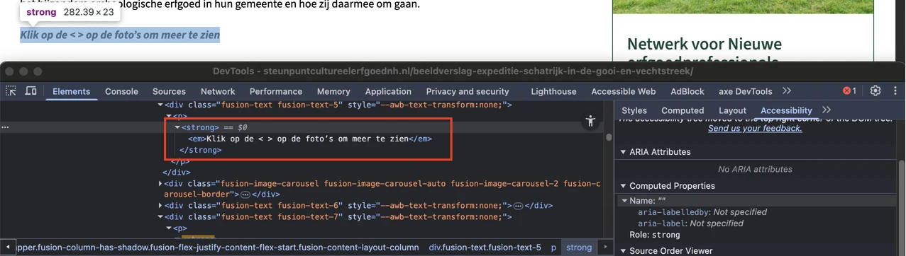
Op deze pagina gebruikt de tekst “Klik op de < > op de foto’s om meer te zien” de tekens “<” en “>” om knoppen in de carousel aan te duiden die dienen om tussen de dia’s met afbeeldingen te wisselen. Voor schermlezers worden deze tekens echter letterlijk uitgesproken (“kleiner dan” / “groter dan”) en geven ze niet de bedoelde betekenis van “vorige” en “volgende” weer. Hierdoor is de instructie onduidelijk voor bezoekers die schermlezers gebruiken.
Oplossing:
De instructietekst moet worden aangepast zodat de werkelijke functie van de knoppen ook voor schermlezergebruikers duidelijk wordt gecommuniceerd. Bijvoorbeeld: “Klik op de knoppen ‘Vorige’ en ‘Volgende’ op de foto’s om meer te zien.” Hiermee wordt gezorgd dat de instructies voor alle bezoekers begrijpelijk zijn.
#25 - Alternatieve tekst van een afbeelding is leeg
Op deze pagina staan carousels met afbeeldingen. De afbeeldingen in deze carousels hebben lege alt-attributen.
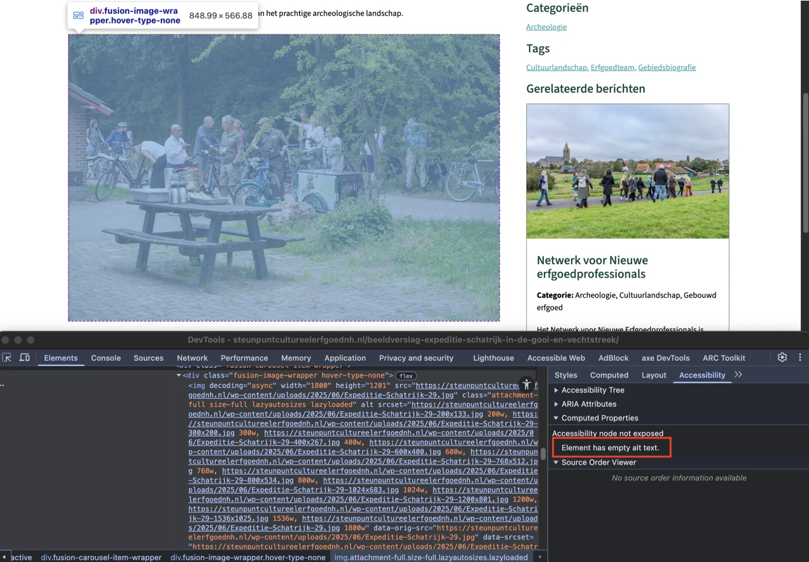
Op de pagina staan meerdere carousels met afbeeldingen. In de HTML-code hebben deze carousels geen juiste rollen en geen toegankelijke namen om ze van elkaar te onderscheiden. Hierdoor kunnen schermlezergebruikers deze elementen niet herkennen als carousels en begrijpen zij het doel of de inhoud ervan niet.
Oplossing:
Voeg een passend role toe aan de containers met carousels, bijvoorbeeld role="region", en geef een unieke toegankelijke naam met aria-label="Description of the content". Andere oplossingen zijn ook mogelijk. Hiermee wordt gezorgd dat schermlezergebruikers het element kunnen herkennen als een aparte, betekenisvolle sectie en begrijpen welk type inhoud het bevat.
#26 - Onzichtbaar element krijgt toetsenbordfocus
Op deze pagina komt het toetsenbordfocus terecht op een onzichtbaar interactief element. Dit element staat na de tekst die begint met “De tweede stop waren de grafheuvels waar Olaf en Casper archeologische …”.
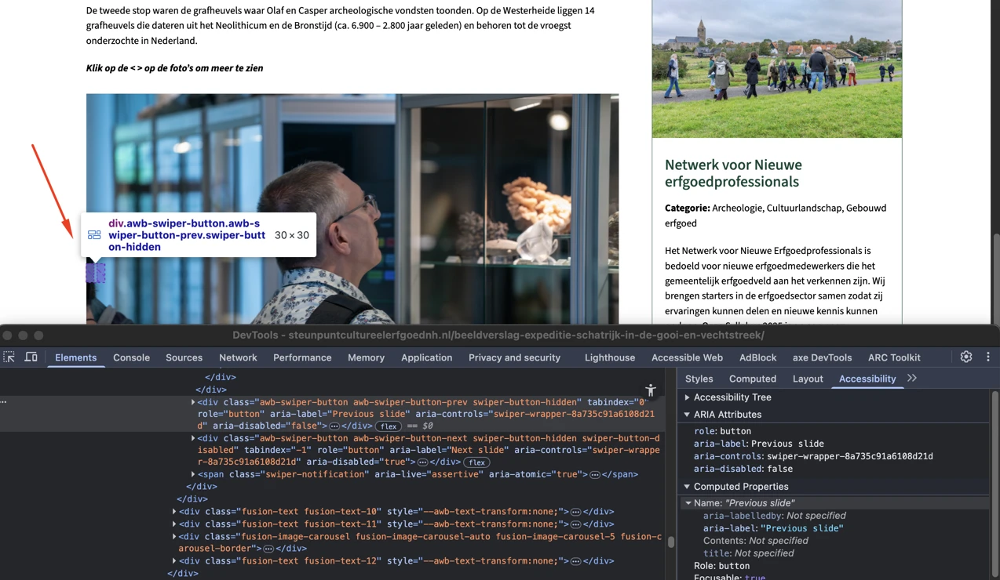
Link naar pagina: https://steunpuntcultureelerfgoednh.nl/contact/ Op deze pagina staan onder “Of neem contact op met onze adviseurs” artikelen die ook links zijn. De toegankelijkheidsproblemen die bij deze links zijn vastgesteld, zijn hetzelfde als die al zijn beschreven bij de vergelijkbare links op de homepagina https://steunpuntcultureelerfgoednh.nl/ in de sectie “Onze adviseurs staan altijd voor u klaar” in de carousel. Deze problemen hebben betrekking op de volgende succescriteria: 1.1.1, 1.3.2, 2.4.4, 2.5.3 en 4.1.2.
#27 - Relatie tussen links in een groep is niet in HTML vastgelegd
Onder de tekst "Hieronder kunt u meer lezen over de activiteiten van het Steunpunt." staat een groep links die visueel als één groep wordt getoond, maar deze groepering is niet terug te zien in de HTML-structuur. Als het voor een ziende bezoeker duidelijk is dat een groep links bij elkaar hoort, dan moet die structuur ook in de HTML-code aanwezig zijn.
Oplossing:
Neem de elementen op in een ul- of nav-element.
#28 - Placeholdertekst wordt gebruikt als label voor een invoerveld
Op deze pagina staan invoervelden met placeholderteksten, bijvoorbeeld “Voornaam”. Deze velden hebben echter geen blijvende labels, omdat de placeholdertekst als label wordt gebruikt.
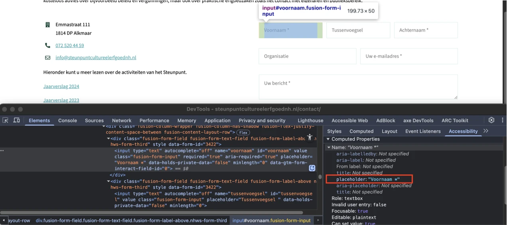
Op deze pagina heeft de placeholdertekst in lichtgrijs (#808080) in het invoerveld een contrastratio van 3,9:1 tegen de witte achtergrond. De huidige contrastratio is onvoldoende.
Oplossing:
Als een zoekveld een zoek-icoon heeft met een laag contrast (minder dan 3,0:1 ten opzichte van de achtergrond), en er is ook geen tekstueel label met voldoende contrast, dan moet de placeholder-tekst voldoende contrast hebben. Dat moet dan minimaal 4,5:1 zijn. Dit geldt ook als er in de placeholder-tekst een belangrijke instructie staat die niet op een andere manier aanwezig is.
#29 - De kleur van de rand van het invoerveld heeft niet genoeg contrast
Op deze pagina hebben de invoervelden in het formulier een lichtblauwe randkleur (#BEE1DE). De contrastratio tussen de rand en de witte achtergrond van de pagina is 1,4:1.
Hetzelfde probleem staat bij de randkleur van het selectievakje: “Ja, ik ben akkoord met jullie privacy voorwaarden.”
Oplossing:
De randen van interactieve elementen zoals invoervelden moeten minimaal een contrast van 3,0:1 hebben met de achtergrond.
#30 - Invoervelden voor persoonlijke gegevens hebben geen correct autocomplete-attribuut
Op deze pagina heeft een formulier waarin persoonlijke gegevens worden verzameld, zoals achternaam, e-mailadres en telefoonnummer, invoervelden met een onjuist attribuut autocomplete (autocomplete="off").
Invoervelden voor persoonlijke informatie zoals achternaam, e-mailadres of telefoonnummer moeten het autocomplete-attribuut hebben. Hierdoor kunnen browsers en hulpsoftware helpen bij het invoeren. Bijvoorbeeld door de velden al automatisch in te vullen.
Oplossing:
Gebruik het autocomplete-attribuut voor alle velden waar persoonlijke informatie in moet worden gevuld. Op deze pagina vind je meer informatie over autocomplete en welke waardes je verplicht moet gebruiken: https://www.w3.org/Translations/WCAG22-nl/#input-purposes.
#31 - HTML5 foutmeldingen worden getoond
Op deze pagina wordt in een formulier HTML5-validatie gebruikt, waarbij standaard HTML5-foutmeldingen worden getoond wanneer het formulier met lege of onjuiste gegevens wordt verzonden. Deze foutmeldingen worden niet door alle browsers en schermlezers even goed ondersteund. Elke browser toont de meldingen anders, en niet altijd op een toegankelijke manier: de melding is soms kortaf en onvolledig.
Oplossing:
Voeg altijd zelf foutmeldingen toe aan het formulier. Controleer of er nog meer formulieren zijn die dit probleem hebben.
#32 - Informatie van laad-icoon wordt niet automatisch voorgelezen door schermlezers
Op deze pagina activeert het aanklikken van de verzendknop “Versturen” een wachttijdanimatie. Deze animatie, die dient als statusmelding, is niet toegankelijk voor blinde bezoekers.
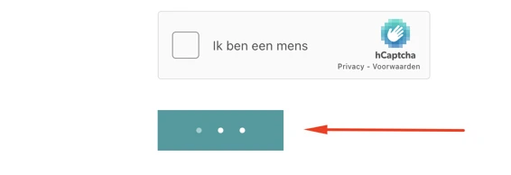
Wanneer deze pagina wordt bekeken met een schermresolutie van 1280 bij 1024 pixels en ingezoomd tot 400%, raakt de volgende tekst gedeeltelijk kwijt: de linktekst “info@steunpuntcultureelerfgoednh.nl” en de placeholdertekst in de invoervelden zoals “Voornaam”.
Oplossing:
Zorg dat alles nog werkt en leesbaar is als je inzoomt tot 400% op een scherm van 1280 bij 1024 pixels.
Link naar pagina: https://steunpuntcultureelerfgoednh.nl/
#33 - Bewegende content kan niet gestopt, gepauzeerd of verborgen worden
Onder de header staat inhoud die elke paar seconden een nieuwe afbeelding, tekst en link toont. Deze inhoud kan niet worden gestopt, gepauzeerd of verborgen. Bewegende content kan storend zijn voor mensen met een cognitieve beperking. De bewegende inhoud zorgt voortdurend voor afleiding terwijl ze de tekst op de pagina proberen te lezen.
Oplossing:
Zorg dat er een manier is waarmee bezoekers beweging kunnen stoppen, pauzeren of verbergen. Dit geldt voor alle bewegende, knipperende, scrollende of automatisch actualiserende content die tegelijk met andere informatie wordt getoond, automatisch start en langer dan 5 seconden speelt.
#34 - Toetsenbordfocus is niet zichtbaar
Onder de header staat inhoud die elke paar seconden een nieuwe afbeelding, tekst en link toont. Het toetsenbordfocus is niet zichtbaar op de links “Lees verder”.
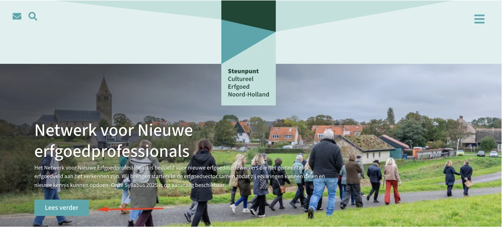
Op deze pagina zijn de volgende teksten in de dia’s van de carousel, die onder de header staat, niet als kop gemarkeerd: "Netwerk voor Nieuwe erfgoedprofessionals", "Gered van de sloop: de renovatie van de Rode Buurt in Zaandijk" en “Het aanwijzen van gemeentelijke monumenten op basis van de erfgoedverordening”. Hetzelfde probleem staat bij andere teksten op deze pagina, bijvoorbeeld “Kaartviewer”, “Onze adviseurs staan altijd voor u klaar”, “Cultureel Erfgoed in kaart gebracht”.
Oplossing:
Dit voorkom je door koppen altijd te markeren met het juiste HTML-element, op het juiste kopniveau: h1, h2, h3, h4, h5 of h6. Meestal kun je het kopniveau kiezen via de content-editor in je CMS. De HTML-code voor de kop wordt dan automatisch toegepast.
#35 - Links hebben geen toegankelijke naam.
Op deze pagina staat in de sectie “Onze adviseurs staan altijd voor u klaar” een carousel met links die een afbeelding en tekst bevatten. Deze links hebben geen toegankelijke naam.
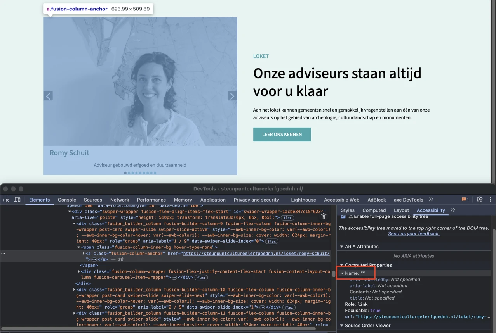
Op deze pagina bevatten de links met de teksten “Kaartviewer” en “Ga naar de kaartviewer” een icoon dat aangeeft dat de link in een nieuw browsertabblad opent. Dit icoon heeft echter geen alternatieve tekst, waardoor schermlezers niet op de hoogte zijn van dit gedrag. Hierdoor weet een blinde bezoeker niet dat deze link een nieuwe browsertab zal openen. Dit is belangrijke informatie die als tekst aanwezig moet zijn, zodat een schermlezer het kan voorlezen.
Oplossing:
Voeg de informatie dat de link een nieuwe browsertab opent toe als visueel verborgen tekst die wel toegankelijk is voor schermlezers.
#36 - Onlogische leesvolgorde van artikelen
Op deze pagina staat in de sectie “Onze adviseurs staan altijd voor u klaar” een carousel met links die een afbeelding en tekst bevatten. De volgorde van de HTML-elementen is niet logisch, omdat de afbeeldingen boven de koppen staan. De huidige volgorde is afbeelding, kop, tekst.
Oplossing:
Je lost dit op door alle inhoud die bij een bepaalde kop hoort, in de code onder die kop te plaatsen. Dit zorgt voor een logische structuur. De visuele vormgeving mag wel afwijken.
#37 - Alternatieve tekst van informatieve afbeelding is niet betekenisvol
Op deze pagina staat in de sectie “Onze adviseurs staan altijd voor u klaar” een carousel met dia’s die afbeeldingen en tekst bevatten. De alternatieve teksten van de afbeeldingen op de dia’s, die afkomstig zijn uit de title-attributen, beschrijven de afbeeldingen niet goed. Op de dia “Romy Schuit” is de alternatieve tekst van de afbeelding bijvoorbeeld “Team MOOI_ Romy”. Afbeeldingen die informatie overdragen moeten een betekenisvolle alternatieve tekst hebben, waarin de belangrijke informatie uit de afbeelding wordt beschreven.
Oplossing:
Voeg een beschrijvende alternatieve tekst toe aan het alt-attribuut.
#38 - Klikgebied van de knoppen bij de carrousel is niet groot genoeg
Op deze pagina heeft een carousel stippen om tussen de dia’s te navigeren. Deze knoppen voldoen niet aan de minimale afmetingen voor interactieve elementen. De gecombineerde hoogte, breedte en omliggende ruimte van elke knop is minder dan 24 CSS-pixels. De oppervlakte waarop geklikt kan worden (het ‘doelgebied’) bij knoppen, links en andere interactieve elementen moet groot genoeg zijn. Anders is het voor bezoekers met een motorische beperking lastig om op het goede element te klikken.
Oplossing:
Elementen moeten óf een oppervlakte hebben van minimaal 24 bij 24 CSS-pixels, óf voldoende uit elkaar geplaatst zijn. Om te bepalen of klikbare elementen ver genoeg uit elkaar staan, teken je een denkbeeldige cirkel met een diameter van 24 pixels in het midden van het doelgebied. Deze cirkel mag op geen enkele plek (de cirkel van) een ander doelgebied raken.
Link naar pagina: https://steunpuntcultureelerfgoednh.nl/erfgoed-geld-leningen-en-fondsen/
#39 - Eén enkele lijst is opgebouwd met meerdere ul-elementen.
Op deze pagina staat onder de kop “Leningen” een lijst met vier items, maar deze lijst heeft geen correcte markering.
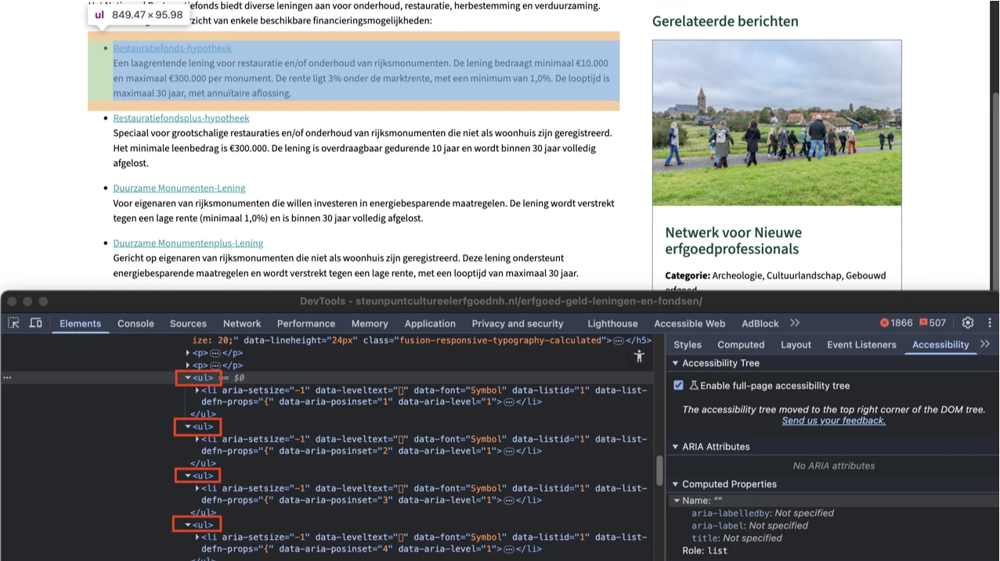
Wanneer deze pagina wordt bekeken met een schermresolutie van 1280 bij 1024 pixels en ingezoomd tot 400%, raakt de volgende tekst gedeeltelijk kwijt: de linkteksten “https://www.restauratiefonds.nl/particulier/financieren/alle-financieringen/noord-hollands-fonds-voor-monumenten”, “https://www.cultuurfonds.nl/aanvragen/voorwaardenwijzer” en “https://www.monumenten.nl/provincies/noord-holland”.
Oplossing:
Zorg dat alles nog werkt en leesbaar is als je inzoomt tot 400% op een scherm van 1280 bij 1024 pixels.
Link naar pagina: https://steunpuntcultureelerfgoednh.nl/erfgoedbustour-voor-raadsleden/ Op deze pagina staat een formulier. Dit formulier bevat dezelfde toegankelijkheidsproblemen als het formulier op de contactpagina https://steunpuntcultureelerfgoednh.nl/. Deze problemen hebben betrekking op de volgende succescriteria: 1.3.5, 1.4.10, 1.4.11, 1.4.3, 2.2.1, 3.3.1, 3.3.2 en 4.1.3. Verdere problemen die met dit formulier zijn vastgesteld, worden hieronder in deze sectie beschreven.
strong-element is gebruikt voor opmaak
Op deze pagina wordt onder de kop "Bevestigde locaties & sprekers:" het strong-element onjuist gebruikt voor opmaakdoeleinden om de tekst vet te maken.
Oplossing:
Verwijder de onnodige strong-elementen en gebruik CSS om de tekst vet te maken.
#40 - Tooltip wordt niet getoond bij toetsenbordfocus
Op deze pagina staat in het formulier naast het label “Soort organisatie” een icoon met een vraagteken dat een tooltip opent. Wanneer een bezoeker met de muis over dit icoon beweegt, opent de tooltip. Dit gebeurt niet bij toetsenbordfocus.
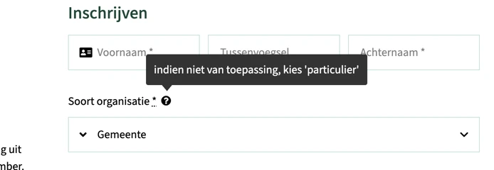
Op deze pagina staat in het formulier naast het label “Soort organisatie” een icoon met een vraagteken dat een tooltip opent. Wanneer een bezoeker met de muis over dit icoon beweegt, verschijnt nieuwe inhoud. Het is niet mogelijk om de tooltip met de ESC-toets te sluiten.
Oplossing:
Zorg dat bezoekers de tooltip met de Esc-toets kunnen sluiten.
#41 - Er is geen legend-element voor de fieldset
Op deze pagina staat in het formulier een groep selectievakjes, voorafgegaan door de tekst "Mijn werkvelden". Hoewel een fieldset waarschijnlijk nodig is, ontbreekt een legend-element.
Hetzelfde probleem staat bij de keuzerondjes onder het label “Wat is uw lunchvoorkeur”.
Je hebt het legend-element nodig om een label of naam aan de groep keuzerondjes of -vakjes te geven.
Oplossing:
Voeg een legend-element toe binnen de fieldset en vul het met de tekst “Mijn werkvelden”. (of een meer beschrijvend en toepasselijk label) om duidelijk het doel van de groep aan te geven.
#42 - De kleur van de rand van het invoerveld heeft niet genoeg contrast
Op deze pagina hebben in het formulier de selectievakjes en keuzerondjes onder “Mijn werkvelden” en “Wat is uw lunchvoorkeur” een lichtblauwe randkleur (#BEE1DE). De contrastratio tussen de rand en de witte achtergrond van de pagina is 1,4:1.
Oplossing:
De randen van interactieve elementen zoals invoervelden moeten minimaal een contrast van 3,0:1 hebben met de achtergrond.
#43 - Bezoekers die inzoomen tot 400% kunnen niet meer alle tekst lezen
Op deze pagina staat in het formulier naast het label “Soort organisatie” een icoon met een vraagteken dat een tooltip opent. Wanneer deze pagina wordt bekeken met een schermresolutie van 1280 bij 1024 pixels en ingezoomd tot 400%, raakt de tekst in de tooltip gedeeltelijk kwijt.
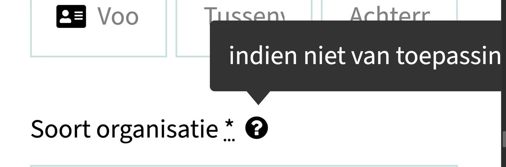
Link naar pagina: https://steunpuntcultureelerfgoednh.nl/gered-van-de-sloop-de-renovatie-van-de-rode-buurt-in-zaandijk/
#44 - Bezoekers die inzoomen tot 400% kunnen niet meer alle tekst lezen
Wanneer deze pagina wordt bekeken met een schermresolutie van 1280 bij 1024 pixels en ingezoomd tot 400%, raakt de linktekst “https://www.nhnieuws.nl/nieuws/344614/duurzame-woningen-van-100-jaar-oud-in-zaandam-fiksen-ze-dat-met-hergebruikte-materialen” gedeeltelijk kwijt.
Oplossing:
Zorg dat alles nog werkt en leesbaar is als je inzoomt tot 400% op een scherm van 1280 bij 1024 pixels.
Het aanwijzen van gemeentelijke monumenten op basis van de erfgoedverordening Link naar pagina: https://steunpuntcultureelerfgoednh.nl/het-aanwijzen-van-gemeentelijke-monumenten-op-basis-van-de-erfgoedverordening/
strong-element is gebruikt voor opmaak
Op deze pagina wordt het strong-element onjuist gebruikt voor opmaakdoeleinden. De hele alinea tekst die begint met “Gemeenten kunnen gebouwen …” is in een strong-element geplaatst om vetgedrukt te worden.
Het strong-element heeft een semantische waarde: het geeft een bepaalde betekenis aan de tekst die erin staat. Dit element geeft aan dat de tekst extra nadruk moet krijgen. Om die reden mag dit element niet gebruikt worden om alleen een visueel effect te bereiken (vetgedrukte tekst).
Oplossing:
Verwijder de onnodige strong-elementen en gebruik CSS om de tekst vet te maken.
#45 - Er staan twee kopregels van hetzelfde niveau direct onder elkaar
Op deze pagina wordt een kop van niveau 5 direct gevolgd door een andere kop van hetzelfde niveau. Zie “Stap 1: Het voortraject” en “In gesprek met de eigenaar”.
Als twee koppen van hetzelfde niveau direct onder elkaar staan zonder inhoud ertussen, dan is één van de koppen niet op de goede manier gebruikt. Direct onder het eerste h3-element mag een h4-element komen of andere content, maar niet nog een keer een h3-element of een h2-element.
Oplossing:
Pas de tekst aan, zodat de kopregelniveaus de structuur van de tekst correct weergeven. Op deze pagina staat een instructie hoe zelf koppen op een webpagina kan testen: https://properaccess.nl/zo-controleer-je-de-koppenstructuur-van-je-website/.
#46 - Kleurcontrast van tekst is te laag (tekst groter dan 24px)
Op deze pagina staan de groene teksten (#3EA8AE) “Redengevende omschrijving”, “Voorbescherming” en “Mogelijkheden voor beroep en bezwaar” op de lichtgroene achtergrond (#D1EAE8). De contrastratio is te laag: 2,2:1.
Oplossing:
Deze tekst is groter dan 24px, daarom moet het contrast minimaal 3,0:1 zijn. Op deze pagina staat een instructie die uitlegt hoe je kleurcontrast kan testen: https://properaccess.nl/hoe-test-ik-kleurcontrast/ .
Link naar pagina: https://steunpuntcultureelerfgoednh.nl/kennisbank/
#47 - Het geselecteerde categorie ziet er anders uit, maar status is niet in code aangegeven
Op deze pagina staan filters. De geselecteerde categorie, bijvoorbeeld “Archeologie”, heeft een duidelijk zichtbaar verschil in uiterlijk, maar dit onderscheid staat niet in de code.
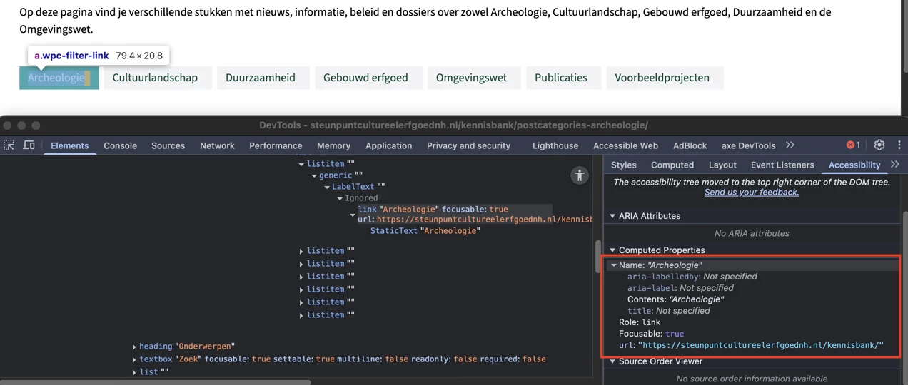
Op deze pagina staat een invoerveld met de placeholdertekst “Zoek”. Dit veld heeft echter geen blijvend label, omdat de placeholdertekst als label wordt gebruikt.
Oplossing:
Voeg een permanent zichtbaar label toe bij het invoerveld.
#48 - De namen van de links in de filters beschrijven niet wat de links doen
Op deze pagina staan in de filters selectievakjes. Deze selectievakjes worden vergezeld door links. Het activeren van deze links selecteert ook het bijbehorende selectievakje. De toegankelijke namen van de links beschrijven deze functionaliteit echter niet.
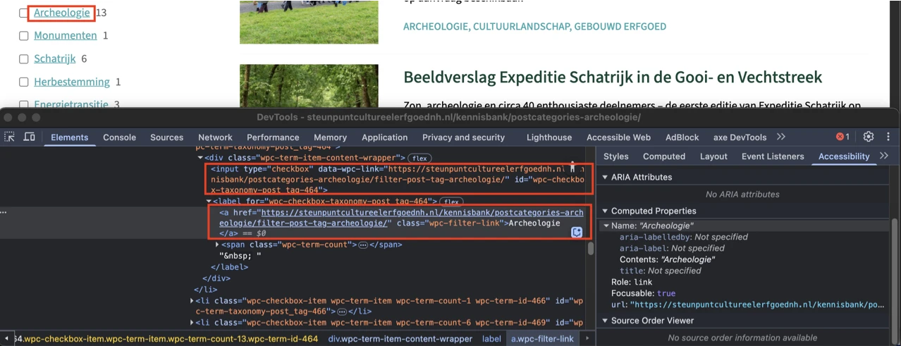
Op deze pagina is het toetsenbordfocus niet zichtbaar op de volgende interactieve elementen: links in filters zoals “Archeologie”, “Cultuurlandschap”, “Duurzaamheid” en andere, selectievakjes in filters en de “X”-knop die in het zoekveld verschijnt wanneer de bezoeker typt. De toetsenbordfocus moet altijd zichtbaar zijn op interactieve elementen zoals links, knoppen en invoervelden die met het toetsenbord focus kunnen krijgen. Bezoekers die met het toetsenbord navigeren moeten goed kunnen zien op welke plek van de pagina ze zijn. Anders weten ze niet op welk moment ze op Enter moeten drukken om een knop of link te bedienen.
Oplossing:
Zorg dat de toetsenbordfocus zichtbaar is op de genoemde elementen.
#49 - De volgorde van het toetsenbordfocus is niet logisch nadat extra verborgen selectievakjes zichtbaar worden gemaakt
Op deze pagina toont de link “Meer zien” in de filters extra verborgen selectievakjes. Na het activeren van deze link worden de selectievakjes zichtbaar, maar het toetsenbordfocus verplaatst niet naar de nieuw getoonde elementen. Een soortgelijk probleem staat bij de knop “LAAD MEER BERICHTEN”, waarbij extra items zichtbaar worden gemaakt. Het toetsenbordfocus verplaatst niet naar de nieuw geopende links. Dit is geen logische focusvolgorde.
Oplossing:
Zorg dat het toetsenbordfocus naar het eerste getoonde selectievakje verplaatst wanneer de verborgen selectievakjes zichtbaar worden gemaakt.
#50 - Focus wordt verplaatst als de bezoeker een filteroptie selecteert
Op deze pagina zorgt het selecteren van een selectievakje in de filters ervoor dat het toetsenbordfocus onverwacht naar het zoekinvoerveld verplaatst. Bezoekers worden niet vooraf geïnformeerd over deze contextwijziging. Een contextwijziging, zoals het verplaatsen van focus, mag niet zomaar plaatsvinden als een bezoeker iets in een formulier aanpast. Het mag dus bijvoorbeeld niet gebeuren als een bezoeker een keuzevakje aanvinkt, een invoerveld invult of een optie uit een keuzelijst selecteert. Andere voorbeelden van grote contextwijzigingen zijn het verzenden van een formulier of het openen van een nieuw venster. Zulke contextwijzigingen mogen alleen gebeuren als de bezoeker van tevoren is gewaarschuwd.
Oplossing:
Voeg een knop toe waarmee bezoekers zelf de filters kunnen toepassen, of gebruik asynchrone JavaScript om de selectie aan te passen. Gebruik in dat geval ook een “live-region” om via de schermlezer aan te geven wanneer de inhoud is veranderd.
#51 - Het bericht over het laden van de resultaten wordt niet voorgelezen
Wanneer een bezoeker de knop “LAAD MEER BERICHTEN” aanklikt, start een laadproces en verschijnt het bericht “De volgende berichten laden…” om de voortgang aan te geven. Dit bericht is een statusupdate, maar mist de benodigde attributen om door schermlezers te worden aangekondigd.
Oplossing:
Om dit toegankelijk te maken, voeg je een geschikt aria-live-attribuut (bijvoorbeeld aria-live="polite") toe aan het element dat het statusbericht bevat. Hierdoor zullen schermlezers de updates van de voortgang aankondigen.
#52 - Naam van de knop beschrijft niet wat de knop doet
Op deze pagina verschijnt in het zoekveld een knop met het icoon “X” zodra de bezoeker begint te typen. Deze knop heeft de functie om de ingevoerde tekst te verwijderen, maar de toegankelijke naam is “X”, wat de functie niet juist beschrijft. Een blinde bezoeker weet daardoor niet wat deze knop precies doet.
Oplossing:
Voeg tekst toe die deze knop goed beschrijft.
#53 - Links hebben geen toegankelijke naam
Op deze pagina staan links die een afbeelding en tekst bevatten. Deze links hebben geen toegankelijke naam. Hierdoor begrijpen bezoekers die een schermlezer gebruiken niet wat de bestemming of de functie is van de link.
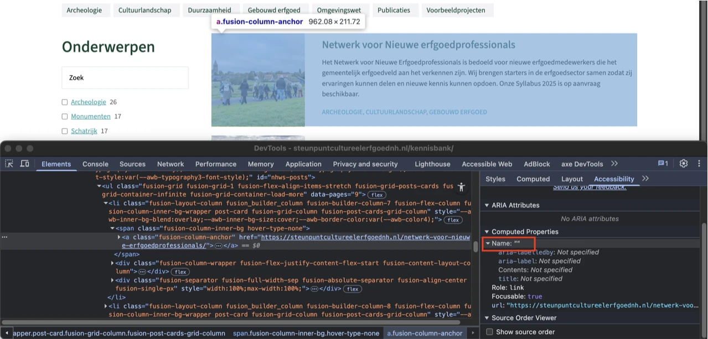
Op deze pagina is de volgorde van de HTML-elementen niet logisch, omdat de afbeeldingen boven de koppen staan. De huidige volgorde is afbeelding, kop, tekst.
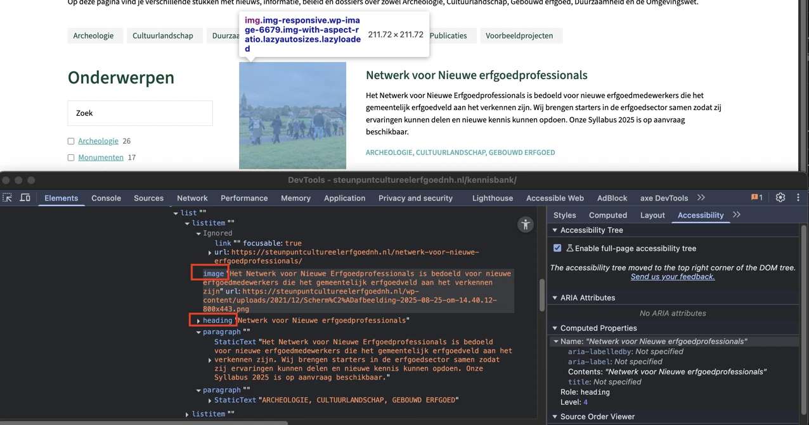
Op deze pagina staan links met afbeeldingen en tekst. De alternatieve teksten van de afbeeldingen, die afkomstig zijn uit de title-attributen, beschrijven de afbeeldingen niet goed. De alternatieve tekst van de afbeelding onder “Gered van de sloop: de renovatie van de Rode Buurt in Zaandijk” is bijvoorbeeld “kleinZaandijkDJI_0366”. Afbeeldingen die informatie overdragen moeten een betekenisvolle alternatieve tekst hebben, waarin de belangrijke informatie uit de afbeelding wordt beschreven.
Oplossing:
Voeg een beschrijvende alternatieve tekst toe aan het alt-attribuut.
Link naar pagina: https://steunpuntcultureelerfgoednh.nl/loket/lisa-timmerman/
#54 - Links hebben geen toegankelijke naam.
Op deze pagina staan secties met verborgen inhoud, zoals “Mag informatie uit de Steunpunt kaartviewer gebruikt worden voor gemeentelijk beleid?”. Elke sectie bevat twee links die de verborgen inhoud openen en sluiten. Deze links hebben geen toegankelijke namen. Hierdoor begrijpen bezoekers die een schermlezer gebruiken niet wat de bestemming of de functie is van de link.
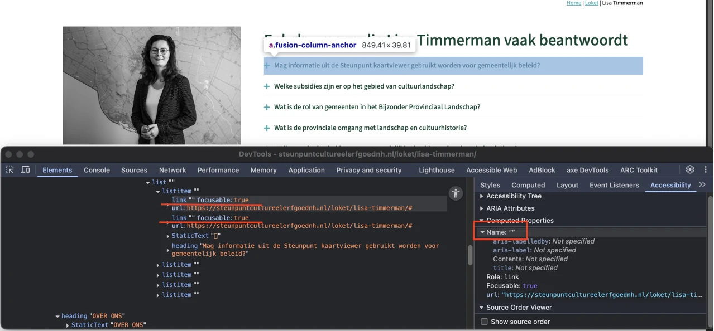
Op deze pagina staan secties met verborgen inhoud, zoals “Mag informatie uit de Steunpunt kaartviewer gebruikt worden voor gemeentelijk beleid?”. De open of gesloten toestand is visueel zichtbaar, maar wordt niet via de code doorgegeven aan schermlezers. Voor bezoekers die de pagina kunnen zien, is het duidelijk of een sectie in- of uitgeklapt is. Maar voor blinde of slechtziende bezoekers die een schermlezer gebruiken is dat niet zo.
Oplossing:
Je lost dit op door een aria-expanded-attribuut toe te voegen aan de knoppen waarmee je de secties opent en sluit, of door visueel verborgen tekst toe te voegen die de staat van de sectie aangeeft.
#55 - Onzichtbaar element krijgt toetsenbordfocus
Op deze pagina komt het toetsenbordfocus in de secties met verborgen inhoud terecht op onzichtbare interactieve elementen. De toetsenbordfocus mag niet terechtkomen op onzichtbare interactieve elementen (links, knoppen, formuliervelden). Als dat wel gebeurt, kan een bezoeker ze onbedoeld activeren.
Oplossing:
Zorg dat alleen elementen die zichtbaar zijn toetsenbordfocus kunnen krijgen en dat de focusvolgorde logisch is.
strong-element in plaats van kop-element
Op deze pagina zijn in de sectie die wordt geopend met “Welke subsidies zijn er op het gebied van cultuurlandschap?” de volgende teksten onjuist gemarkeerd met strong in plaats van met juiste kop-elementen: “Rijk” en “Provincie Noord-Holland”.
Het strong-element is niet bedoeld om koppen mee te markeren. Je moet dat altijd doen met een kop-element, zoals h2. Koppen gebruik je om een tekst te structureren. Alleen als je ze als kop markeert met een kop-element, begrijpt hulpsoftware die betekenis. Het strong-element gebruik je wel als je nadruk wilt geven aan enkele woorden of een zinsdeel.
Oplossing:
Verwijder het strong-element en gebruik de juiste kop-elementen om deze koppen te markeren, zoals h2 of h3.
#56 - Naam van de links beschrijft niet wat de links doet
Op deze pagina staan secties met verborgen inhoud. In de tekst van de uitgeklapte panelen staan links die geen bestemming hebben. Het klikken op deze links doet alleen het paneel sluiten. Een blinde bezoeker weet daardoor niet wat deze links precies doet.
Oplossing:
Als deze links bedoeld zijn om de panelen te sluiten, moet de linktekst dit gedrag duidelijk beschrijven. Als ze bedoeld zijn om bezoekers naar andere pagina’s te leiden, moeten ze functioneren als echte navigatielinks en niet als knoppen om het paneel te sluiten. De huidige uitvoering is misleidend.
#57 - Alternatieve tekst van afbeelding is niet betekenisvol
Het volgende is alleen een advies, maar het kan de toegankelijkheid van de website vergroten. Op deze pagina staat een afbeelding met de alternatieve tekst “[title] - Adviseur cultuurlandschap bij het Steunpunt Cultureel Erfgoed Noord-Holland”. Deze tekst is niet toereikend, omdat hiermee geen zinvolle beschrijving van de afbeelding wordt gegeven.
Oplossing:
Verwijder de tekst “[title]” uit de toegankelijke naam en voeg in plaats daarvan de volledige naam toe van de persoon die op de afbeelding staat.
Link naar pagina: https://steunpuntcultureelerfgoednh.nl/loket/ Op deze pagina staan artikelen die ook links zijn. De toegankelijkheidsproblemen die bij deze links zijn vastgesteld, zijn hetzelfde als die al zijn beschreven bij de vergelijkbare links op de homepagina https://steunpuntcultureelerfgoednh.nl/ in de sectie “Onze adviseurs staan altijd voor u klaar” in de carousel. Deze problemen hebben betrekking op de volgende succescriteria: 1.1.1, 1.3.2, 2.4.4, 2.5.3 en 4.1.2. Op deze pagina staat een groep links: “Cultuurlandschap”, “Archeologie”, “Omgevingswet” en “Gebouwd erfgoed”. De toegankelijkheidsproblemen die bij deze groep links zijn vastgesteld, zijn hetzelfde als die al zijn beschreven bij de vergelijkbare links op de pagina Kennisbank https://steunpuntcultureelerfgoednh.nl/kennisbank/.
strong-element is gebruikt voor opmaak
Op deze pagina wordt onder "Loket voor gemeenten" het strong-element onjuist gebruikt voor opmaakdoeleinden om de tekst vet te maken.
Oplossing:
Verwijder de onnodige strong-elementen en gebruik CSS om de tekst vet te maken.
Link naar pagina: https://steunpuntcultureelerfgoednh.nl/masterclass-groen-erfgoed-voor-niet-ambtenaren/
#58 - Er staan twee koppen van hetzelfde niveau direct onder elkaar
Op deze pagina wordt een kop van niveau 4 direct gevolgd door een andere kop van hetzelfde niveau. Zie “Tags” en “Gerelateerde berichten”.
Oplossing:
Als een sectie onder een kop op een bepaalde pagina geen inhoud bevat, kan een mogelijke oplossing zijn om visueel verborgen tekst toe te voegen zodat schermlezergebruikers geen indruk krijgen dat content ontbreekt.
#59 - Het inhoudstype van het iframe en het doel van de inhoud worden niet beschreven in het title-attribuut
Op deze pagina staat een iframe met het title-attribuut "YouTube video player 1".
Iframes moeten een goede beschrijving hebben. Die zet je meestal in het title-attribuut van het iframe. Er moet in staan welk type inhoud het is (bijvoorbeeld een podcast of video), en waar het inhoudelijk over gaat. Deze beschrijving van de inhoud moet uniek en betekenisvol zijn. Door de beschrijving kunnen bezoekers met hulpsoftware beslissen of het de moeite waard is om de inhoud van het iframe te verkennen.
Oplossing:
Verander de tekst van het title-attribuut zodat duidelijk is welk type inhoud het iframe bevat, en waar het inhoudelijk over gaat.
#60 - De automatisch gegenereerde ondertiteling heeft fouten
Op deze pagina staat een video met een voice-over. Hoewel er ondertitels aanwezig zijn, zijn deze automatisch gegenereerd en daardoor onnauwkeurig. Video’s waarin gesproken wordt, moeten altijd goede ondertiteling krijgen. Zo krijgen bezoekers die de video niet (goed) kunnen horen ook alle informatie. Deze ondertiteling moet exact hetzelfde zijn als wat wordt gezegd. De automatisch gegenereerde ondertiteling voldoet hier niet aan, omdat er punctuatie ontbreekt en er fouten in kunnen zitten.
Oplossing:
Zorg dat de ondertiteling van hoge kwaliteit is en exact weergeeft wat wordt gezegd in de video.
#61 - Video bevat tekst of logo’s waarvoor geen alternatief is
Op deze pagina staat een video. De video bevat teksten en logo’s op verschillende momenten (bijvoorbeeld rond 0:01). Ook worden er mensen en taferelen van een evenement getoond die visuele informatie overbrengen (vanaf ongeveer 1:09). Deze visuele informatie is niet toegankelijk voor blinde bezoekers. Er is geen media-alternatief en er is geen audiobeschrijving aanwezig. Hierdoor missen blinde of slechtziende bezoekers informatie. Dit kan voor succescriterium 1.2.3 worden opgelost met een geschreven tekst (media-alternatief), maar om aan succescriterium 1.2.5 te voldoen, moet een audiobeschrijving worden toegevoegd waarin de visuele elementen in de video worden beschreven, zoals namen, functies, logo’s en teksten.
Oplossing:
Dit kan voor dit succescriterium (1.2.3) worden opgelost met een geschreven tekst (media-alternatief), maar om aan succescriterium 1.2.5 te voldoen, moet een audiobeschrijving worden toegevoegd die de visuele elementen in de video beschrijft, zoals namen, functies, logo’s en teksten.
Link naar pagina: https://steunpuntcultureelerfgoednh.nl/nieuwsbrief/ Op deze pagina staat een formulier. Dit formulier bevat dezelfde toegankelijkheidsproblemen als het formulier op de contactpagina https://steunpuntcultureelerfgoednh.nl/. Deze problemen hebben betrekking op de volgende succescriteria: 1.3.5, 1.4.10, 1.4.11, 1.4.3, 2.2.1, 3.3.1, 3.3.2 en 4.1.3. Verdere problemen die met dit formulier zijn vastgesteld, worden beschreven in de onderstaande sectie.
#62 - Er zijn links met dezelfde tekst maar een andere bestemming
Op deze pagina staan in de sectie “Archief” links met dezelfde tekst, maar met een verschillende bestemming. Zie bijvoorbeeld de links met de tekst “Nieuwsbrief 1”. Er zijn dus meerdere links aanwezig op de pagina met dezelfde tekst, maar een verschillend linkdoel. Dit kan verwarrend zijn voor bezoekers.
Oplossing:
Zorg dat links met dezelfde tekst ook naar dezelfde bestemming leiden. Als het om een andere bestemming gaat, moet de linktekst ook anders zijn.
#63 - Er is geen legend-element voor de fieldset
Op deze pagina staat in het formulier een groep keuzerondjes. Hoewel een fieldset waarschijnlijk nodig is, ontbreekt een legend-element.
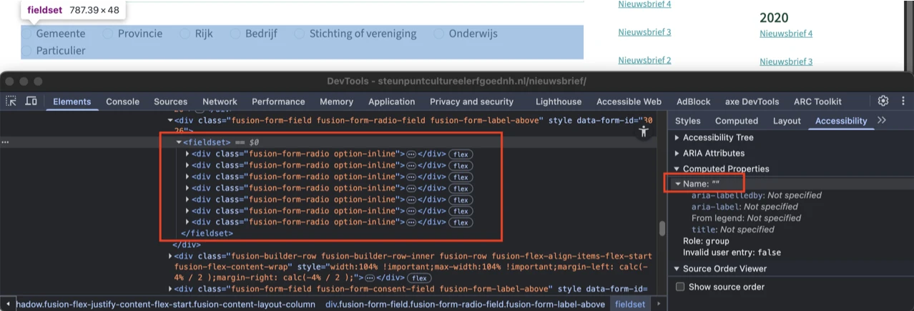
Op deze pagina heeft het formulier keuzerondjes met een lichtblauwe randkleur (#BEE1DE). De contrastratio tussen de rand en de witte achtergrond van de pagina is 1,4:1.
Oplossing:
De randen van interactieve elementen zoals invoervelden moeten minimaal een contrast van 3,0:1 hebben met de achtergrond.
Link naar pagina: https://steunpuntcultureelerfgoednh.nl/contact/ Link naar PDF: https://steunpuntcultureelerfgoednh.nl/wp-content/uploads/2025/02/Jaarverslag-Steunpunt-Cultureel-Erfgoed-Noord-Holland-2024-spreads.pdf
#64 - PDF-document heeft geen titel
In dit PDF-document is geen titel ingesteld in de bestandseigenschappen. Zelfs als er een titel op de eerste pagina staat, moet je in de PDF-instellingen ook een documenttitel instellen. Als je een pdf opent in een pdf-lezer (zoals Adobe Acrobat of een browser), zie je de bestandsnaam meestal bovenaan in de titelbalk, bijvoorbeeld document123.pdf. Maar als je een documenttitel in de pdf-metadata instelt, dan wordt die titel in plaats van de bestandsnaam getoond. Dit maakt het document toegankelijker voor bezoekers met verschillende beperkingen. Zij kunnen dan snel en gemakkelijk zien of het document relevant is.
Los het op in Adobe Acrobat:
- Open het pdf-document in Adobe Acrobat.
- Ga naar Bestand > Eigenschappen.
- Ga naar het tabblad Beschrijving.
- Vul in het veld Titel een beschrijvende titel in, bijvoorbeeld: "Rapport: Bevolkingscijfers 2023".
- Klik op OK en sla het bestand op.
#65 - Structuur van pdf-document is niet in codes vastgelegd
In dit PDF-document ontbreken codes, waardoor de inhoud niet toegankelijk is voor schermlezers. Bovendien kunnen wij de pdf hierdoor niet volledig onderzoeken. Het gaat om alle succescriteria die met de pdf-codelaag te maken hebben, zoals semantische koppen en alternatieve teksten bij afbeeldingen. Als je dit oplost, is het dus mogelijk dat er nieuwe toegankelijkheidsproblemen ontstaan die nu nog niet aan het licht zijn gekomen.
Oplossing:
Voeg codes toe aan het document die de structuur van het document weergeven.
#66 - Kleurcontrast van kleine tekst is te laag
In het PDF-document op URL staan links met blauwe tekst op een witte achtergrond. De contrastratio is te laag: 2,8:1. Dit staat onder andere op pagina 6, 7, 8 en andere pagina’s. Op pagina 14 staat blauwe tekst op een lichtblauwe achtergrond, bijvoorbeeld “Inge den Oudsten”. De contrastratio is ook te laag: 2,4:1.
Oplossing:
Zorg dat het contrast minimaal 4,5:1 is.
Link naar pagina: https://steunpuntcultureelerfgoednh.nl/beeldverslag-expeditie-schatrijk-in-de-gooi-en-vechtstreek/ Link naar PDF: https://steunpuntcultureelerfgoednh.nl/wp-content/uploads/2025/07/Schatrijk_boekje27.pdf
#67 - PDF-document heeft geen titel
In het PDF-document op URL is geen titel ingesteld in de bestandseigenschappen.
Los het op in Adobe Acrobat:
- Open het pdf-document in Adobe Acrobat.
- Ga naar Bestand > Eigenschappen.
- Ga naar het tabblad Beschrijving.
- Vul in het veld Titel een beschrijvende titel in, bijvoorbeeld: "Rapport: Bevolkingscijfers 2023".
- Klik op OK en sla het bestand op.
#68 - Afbeeldingen hebben geen alt-tekst
In het PDF-document op URL staan afbeeldingen zonder tekstalternatieven (alt-tekst).
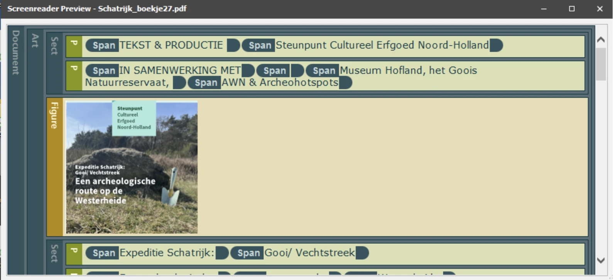
In this pdf-document there are several headings that are not marked up as headings. For example, see “Een archeologische route op de Westerheide”, “Gebruik kaart”, “Locatie 1 De Fransche kamp”, and others. Op deze manier verschilt de visuele informatiestructuur van de structuur van het document in de tags.
Oplossing:
Vervang de P-tag door de H-tag, zodat de tag-structuur gelijk is aan de visuele structuur.
#69 - Kleurcontrast van kleine tekst is te laag
In het PDF-document op URL staat blauwe tekst op een witte achtergrond. De contrastratio is te laag: 2,8:1. Zie bijvoorbeeld “Gebruik kaart”.
Oplossing:
Zorg dat het contrast minimaal 4,5:1 is.
Link naar pagina: https://steunpuntcultureelerfgoednh.nl/toegankelijkheidsverklaring/
#70 - Bezoekers die inzoomen tot 400% kunnen niet meer alle tekst lezen
Wanneer deze pagina wordt bekeken met een schermresolutie van 1280 bij 1024 pixels en ingezoomd tot 400%, raakt de tekst “Toegankelijkheidsverklaring” gedeeltelijk kwijt.
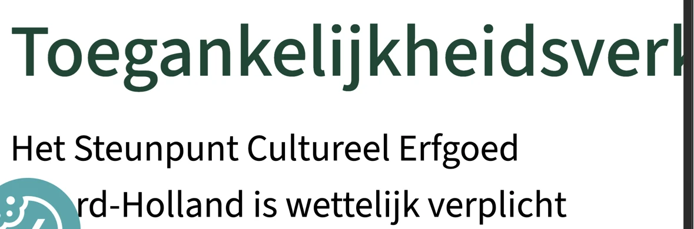
Link naar pagina: https://steunpuntcultureelerfgoednh.nl/?s=steunpunt&post_type%5B%5D=any&search_limit_to_post_titles=0&add_woo_product_skus=0&fs=1
#71 - Skiplink verwijst niet naar de juiste plek
Op deze pagina verwijst de skiplink naar de eerste link in de zoekresultaten, maar er staat nog unieke inhoud boven dit doel en er staat ook een zoekveld. De skiplink moet verwijzen naar (het begin van) de unieke inhoud op de pagina, zodat een bezoeker alle herhalende of niet-essentiële content kan overslaan.
Oplossing:
Zorg dat de skiplink verwijst naar het juiste startpunt van de unieke content op de pagina.
#72 - Toetsenbordfocus is niet zichtbaar
Op deze pagina is het toetsenbordfocus niet zichtbaar op de knop met het vergrootglas die in het zoekveld staat.
Oplossing:
Zorg dat de toetsenbordfocus zichtbaar is op de genoemde elementen.
#73 - HTML5 foutmeldingen worden getoond
Op deze pagina gebruikt het zoekveld HTML5-validatie, waarbij standaard HTML5-foutmeldingen worden getoond wanneer het veld leeg wordt verzonden. Deze foutmeldingen worden niet door alle browsers en schermlezers even goed ondersteund. Elke browser toont de meldingen anders, en niet altijd op een toegankelijke manier: de melding is soms kortaf en onvolledig.
Oplossing:
Voeg altijd zelf foutmeldingen toe aan het formulier. Controleer of er nog meer formulieren zijn die dit probleem hebben.
Over dit onderzoek
Leeswijzer
Onze rapporten zijn anders. Bij het bespreken van de gevonden problemen volgen wij niet de structuur van de norm, maar die van jouw website of app. Hierdoor kun je gewoon per pagina of scherm aan de slag gaan. Wel zo makkelijk! Je vindt verderop een overzicht van alle pagina’s met problemen.
We geven je bij elk gevonden issue een paar voorbeelden, maar niet een complete lijst. Controleer zelf of het probleem ook nog op andere plekken voorkomt. Zie het rapport als een leidraad.
Gebruikte norm
Dit onderzoek laat zien in hoeverre de website op dit moment voldoet aan WCAG 2.2, niveau A en AA. WCAG staat voor Web Content Accessibility Guidelines. Dit is de internationale norm voor digitale toegankelijkheid. De Europese norm EN 301 549 bevat alle eisen van WCAG op niveau A en AA.
In dit rapport hebben we korte beschrijvingen van de succescriteria uit de norm opgenomen, met een algemene uitleg erbij. Wil je ze helemaal lezen? Bekijk dan de documentatie van WCAG.
Gebruikte onderzoeksmethode
We gebruiken de onderzoeksmethode WCAG-EM van het W3C. Het proces ziet er als volgt uit:
- vaststellen wat binnen en buiten scope valt
- vaststellen welke technologieën zijn gebruikt
- steekproef (sample) samenstellen
- steekproef onderzoeken
- gevonden issues beschrijven
Het grootste deel van het onderzoek doen we met de hand. Voor een deel van de toegankelijkheidseisen gebruiken we automatische tools als ondersteuning, zoals axe-core en Chrome Developer Tools.
Belangrijk om te weten
Dit rapport helpt je om de toegankelijkheid van je website te verbeteren. Maar let op: het is geen definitieve, volledige lijst van alle aanwezige toegankelijkheidsproblemen. Dat zit zo:
Het is een steekproef
Ten eerste is het onderzoek gebaseerd op een steekproef. Die is op een betrouwbare manier genomen, en de meeste problemen zullen daardoor zeker aan het licht komen. Toch kan een probleem net buiten de steekproef vallen. Bij een volgend onderzoek kan het wel ontdekt worden.
Op basis van falsificatie
We beoordelen vanuit het principe van falsificatie. Dat houdt in dat we proberen te bewijzen dat iets niet waar is, in plaats van te bevestigen dat het klopt. ‘Voldoet’ betekent daarom dat we geen reden hebben gevonden om een punt af te keuren. Maar als we later wél een reden vinden, kan het alsnog worden afgekeurd.
Voortschrijdend inzicht
Het komt voor dat de beoordeling van een succescriterium op detailniveau verandert. De norm beschrijft namelijk niet élk mogelijk scenario. Samen met andere onderzoeksbureaus overleggen we hoe we met bepaalde situaties omgaan. Zo kan iets dat nu wordt afgekeurd, soms bij een volgend onderzoek worden goedgekeurd en andersom.
Oplossen leidt tot nieuw probleem
Ten slotte kan het gebeuren dat bij het oplossen van een probleem onbedoeld een nieuw toegankelijkheidsprobleem ontstaat. Dat komt dan bij een volgend onderzoek pas naar voren.
Hoe werkt dit rapport?
Bevindingen bekijken en filteren
Alle gevonden toegankelijkheidsproblemen staan onder Gevonden problemen. Je kunt de bevindingen filteren op:
- Impact (Groot, Medium, Klein, Advies) — hoe ernstig is het probleem voor de gebruiker?
- Type (Content, Techniek) — moet de inhoud of de techniek worden aangepast?
- Status (Open, Opgelost) — welke problemen zijn al verholpen?
Voortgang bijhouden
Je kunt je voortgang op twee manieren bijhouden:
- CSV-export — exporteer alle bevindingen als CSV-bestand en laad het in een (online) spreadsheet om met je team samen te werken.
- Jira-export — exporteer alle bevindingen als Jira-compatibel CSV-bestand. Importeer het via Jira > Issues > Import issues from CSV. Bevindingen worden aangemaakt als bugs met prioriteit op basis van impact.
- Registreer in de browser — activeer deze optie om per bevinding bij te houden of het is opgelost. Je voortgang wordt opgeslagen in je browser. Niemand anders kan je resultaat zien. Let op: de voortgang is gekoppeld aan je browser. Als je een andere browser of een ander apparaat gebruikt, begint de telling opnieuw.
- Plan van aanpak — download een geprioriteerd plan van aanpak om de gevonden problemen stap voor stap op te lossen. Dit is beschikbaar bij audits vanaf maart 2026.
Link naar een specifieke bevinding delen
Bij elke bevinding verschijnt een link-icoon wanneer je er met de muis overheen gaat. Klik op dit icoon om de directe link naar die bevinding te kopiëren. Je kunt deze link plakken in een e-mail of chatbericht, bijvoorbeeld om een vraag te stellen aan Proper Access over een specifiek punt.